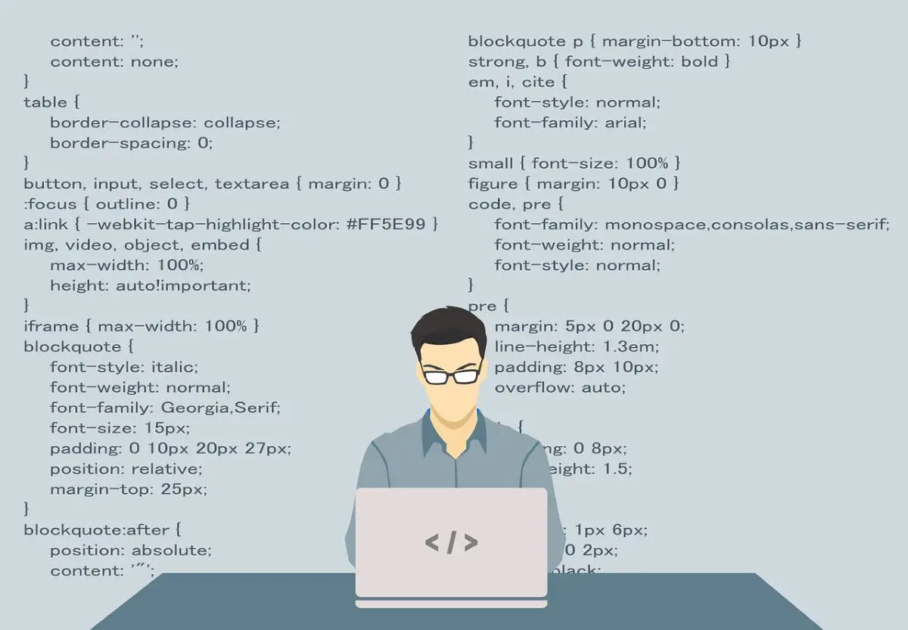

Table of Content
- 1. Computer Programming Fundamentals
- 2. Digital Electronics
- 3. Data structures and algorithms
- 4. Software Engineering
- 5. Operating Systems
- 6. Database Management Systems (DBMS)
- 7. Web Development
- 8. Computer network and Internet technology
- 9. Mobile Application Development
- 10. Theory of Computation
- 11. Cyber Security
- 12. Digital Marketing
- 13. Artificial Intelligence
- 14. Graphic Design
- 15. Project
- 16. Internship
- Conclusion
- Frequently Asked Questions
BCA subjects details
The BCA Course covers a wide range of subjects that prepare students for careers in technology and computer applications. BCA subjects details such as Programming Languages like C and Java, Database Management Systems, Web Technologies, Software Engineering and Computer Networks and Internet technology etc.
Computer Programming Fundamentals
In this subject, students learn the basics of programming. They start with languages like C. The focus is on writing simple C programming code and understanding how to solve problems using these languages.
Use Programming Fundamentals
These skills are important for software development, web development and creating others applications.

Digital Electronics
Digital electronics is a part of electronics that use in digital signals, which use 0s and 1s to represent data. This makes it easier to process information compared to analog signals.
The main components include logic gates, which perform basic operations like AND, OR and NOT and flip-flops. which store single bits of data.
Use Digital Electronics
Digital electronics is commonly used in smartphones, computers and many devices we use every day.
Data structures and algorithms
Data structures and algorithms students learn how to manage data. Students study about many types of data structures. such as linked lists, arrays, stacks and trees. Knowing how to use these structures helps in writing efficient programs.
Use Data Structures and algorithms
Knowledge of data structures is important for developing algorithms & optimizing software performance.
Software Engineering
In Software Engineering students study the software development process. Students learn how to planning, designing, coding, testing and maintaining software. Students learn how to make a high quality software that user needs.
Use Software Engineering
Skills in software engineering are valuable for working in software companies, managing projects and developing applications.
Operating Systems
Students learn how operating systems work in this subject. Chapter include process management, memory management and file systems etc. Understanding operating systems helps students how computers run software.
Use Operating Systems
Understanding operating systems is important for system administration and software development.
Database Management Systems (DBMS)
DBMS covers how to store and manage data in databases. Students learn to create databases and use SQL (Structured Query Language) to save and manipulate data. Understanding databases management systems is important for many applications.
Use DBMS
This knowledge is important in jobs related to data management, backend development and database administration.
Web Development
This subject introduces students to building websites. They learn to use HTML (Hypertext Markup Language), CSS (Cascading Style Sheets) , JavaScript, python and PHP. Students practice designing and developing simple web pages.
Use Web Development:
These skills are used in creating websites for businesses, blogs and online services.
Computer network and Internet technology
Computer Networks and Internet technology students learn how computers communicate with each other devices. It is the most important in BCA subject.
Students study concepts like network protocols, IP addressing and internet architecture. This knowledge is essential for understanding how data is shared across the internet and networks.
Use Computer Networks and Internet technology
This knowledge is useful for network administration, cybersecurity, and IT support.
Mobile Application Development
In this subject, students explore how to create apps for mobile devices. They learn programming languages like Java for Android and Swift for iOS. Students design simple apps and understand the mobile development process
Use Mobile Application Development
Skills in mobile development are needed for jobs in app development and mobile software companies.
Theory of Computation
Theory of Computation introduces fundamental concepts of computer science. Students learn about algorithms, automata and computational theory. This subject helps develop logical thinking and problem solving skills.
Use Theory of Computation
This knowledge is beneficial for software development, research and academic careers.
Cyber Security
Cyber Security focuses on protecting computers and networks from attacks. Students learn about different types of threats and how to safeguard data. This subject is important for anyone interested in keeping information safe.
Use Cyber Security
Skills in cybersecurity are essential for roles in IT security, ethical hacking and data protection.
Digital Marketing in BCA subject full details
This subject covers the basics of marketing in the digital world. Students learn about social media, search engine optimization (SEO) and online advertising. Understanding digital marketing is useful for promoting products and services.
Use Digital Marketing
This knowledge is useful for marketing roles in businesses, especially in the digital space.
Artificial Intelligence
The Artificial Intelligence (AI) subject in Bachelor of Computer Applications students learn about making software that can think and learn like humans.
Students learn about concepts like machine learning, natural language processing and neural networks. They study how AI can be used to solve problems and make decisions based on data.
Use Artificial Intelligence
Skills from the AI subject can be used in various fields. For example: Software Development, Data Analysis, Healthcare, Gaming and Automation.
Graphic Design subject in BCA
The Graphic Design subject in BCA teaches students how to create visual content using software tools. BCA students learn about color theory and design principles, typography and layout.
Use Graphic Design
They practice using programs like Adobe Photoshop and Illustrator to make designs for various purposes like Advertising, Web Design, Branding, Print Media etc.
Project
In the final year, students often work on a project. They apply what they learned in how to develop a software. This hands on experience helps them build skills and improved their knowledge.
Use Project
Project work helps students improved their skills to potential employers and gain practical experience.
Internship
Many BCA programs include an internship. Students get the chance to work in a software or IT company and gain practical experience. Internships help BCA students understand the workplace and apply their skills.
Use Internship
Internships are great for networking, gaining experience and improving job prospects after graduation.
Conclusion
The BCA program covers a wide range of subjects that prepare students for careers in technology and computer applications. Every subject learn important skills that can be applied in various jobs.
Here some BCA subjects details such as C programming, Data structure, DBMS, Software Engineering , AI etc. With these skills, graduates can find opportunities in many fields. such as IT software development, web design and cybersecurity.
This program helps build a strong foundation for a successful career in the tech industry.
Frequently Asked Questions
Bca subjects details first year
In bca first year, some subjects are usually included in all colleges,i) Computer Fundamentals, ii) Mathematics for Computer Science iii) Computer Architecture iv) Digital Electronics etc.
What kind of job opportunities are available after BCA?
There are many job opportunities after BCA such as Web developer, Software developer, Cyber security expert, Data scientist and so more
How can I prepare for my BCA exams?
For practical try programming with logic by yourself and discuss with teachers for theory. Also you can take some help of internet.
How many subjects in BCA
There is no guarantee but BCA usually consists of 25-30 subjects.
BCA full form
BCA full form is Bachelor of Computer Applications
Recent Post
- Difference between narrow ai and general ai
- How AI is used in agriculture
- Janitor AI full details in depth with example
- What is the primary advantage of using generative ai in content creation
- ChatGPT features list, JBot, limitations, and benefits for you.
- The importance of computer networking & advantages of network